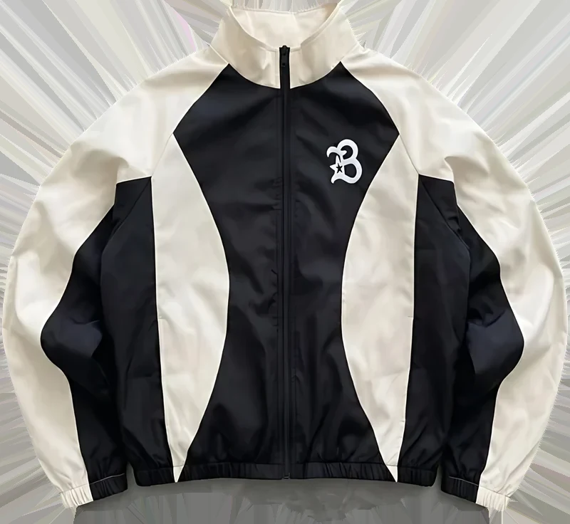
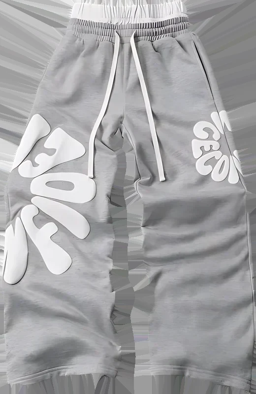

Arraste para girar · pinça para zoom


Manequim montado a partir das suas 4 fotos. As peças são simuladas como tecido caindo no corpo. As costas usam uma versão da foto da frente sem as estampas, porque esses produtos não têm foto das costas.